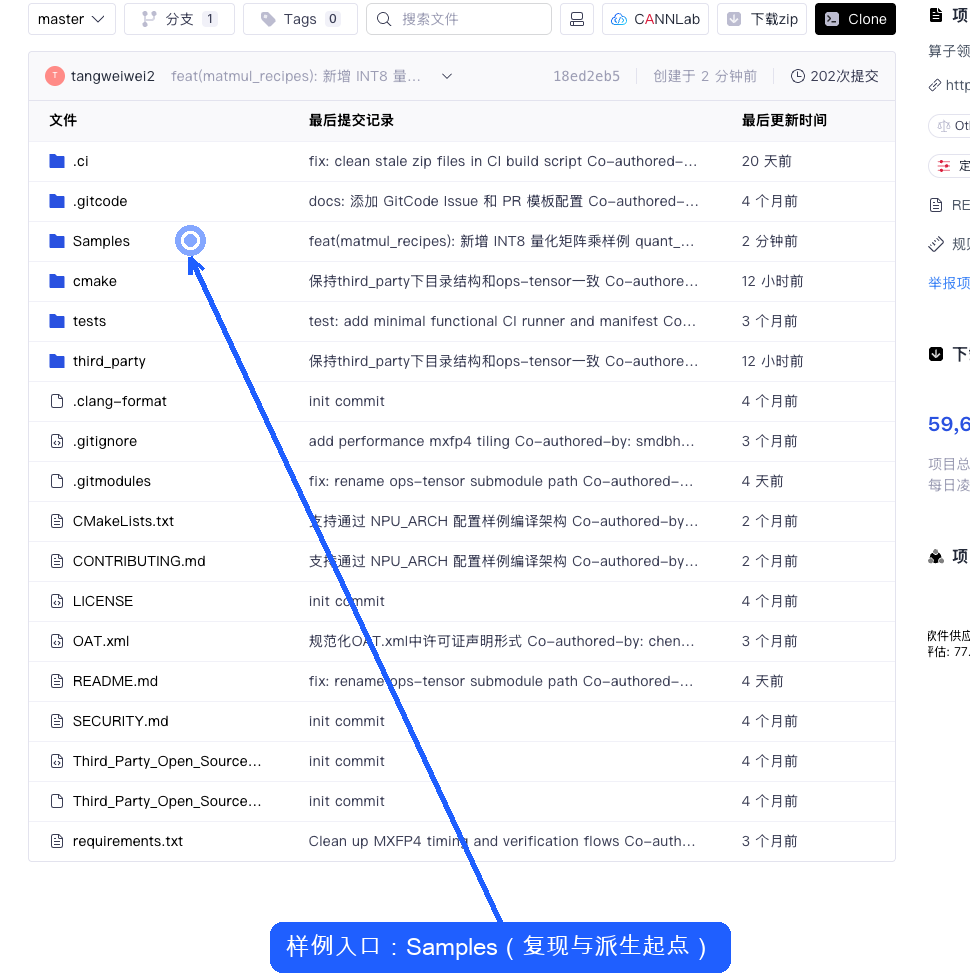
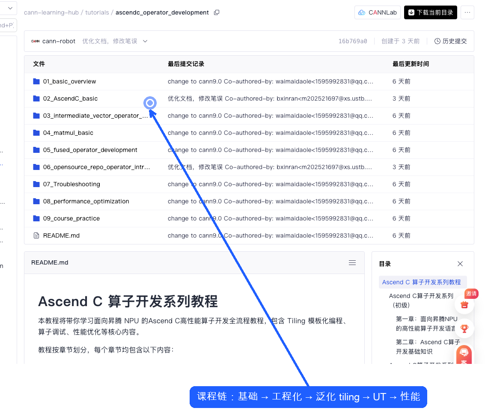

1算子复现部署
任务：复现 cann-samples 的 vector_add，并确认样例能否成为后续改造起点。
cann-samples环境断点代码审视运行尝试受阻
问题判定
不是样例代码不够，而是仓库没有先回答“我的机器能不能跑”。开发者第一步失败时无法定位是工具、环境、硬件还是代码问题。
这一步具体干了什么
用户目标像真实开发者一样，先把 vector_add 在本地复现，确认仓库样例是否能作为后续改造起点。
查看资产
cann-samples/README.md、vector_add/main.asc、CMakeLists.txt、cmake/ascend.cmake。实际动作按 README 尝试
cmake -S . -B build -DNPU_ARCH=dav-2201，并追到 CMake 对 Toolkit 路径的依赖。结果与断点本机
cmake 不在 PATH；继续往下还会需要 ASCEND_HOME_PATH、Bisheng 和 NPU 环境。
Samples，开发者由此继续定位 0_Introduction/vector_add 作为本地复现起点。
运行命令与真实环境断点
# cann-samples README 的运行路径
source ${install_path}/ascend-toolkit/set_env.sh
cmake -S . -B build -DNPU_ARCH=dav-3510
cmake --build build --target vector_add
./build/Samples/0_Introduction/vector_add/vector_add
# 本次本机实测
$ command -v cmake
zsh: command not found: cmake
$ python3 --version
Python 3.9.6
$ echo $ASCEND_HOME_PATH
<unset>
# ascend.cmake 后续还会解析
ASCEND_DIR / ccec_compiler/bin/bisheng / toolkit headers
cann-samples/README.md
Samples/0_Introduction/vector_add/main.asc
Samples/0_Introduction/vector_add/CMakeLists.txt
cmake/ascend.cmake
问题拆解
- 代码资产本身有帮助：vector_add 同时包含 kernel、ACL host 侧内存管理、kernel launch、CPU golden 校验。
- 复现入口没有形成预检脚本。实际运行第一步卡在
cmake缺失；即便补 cmake，ascend.cmake还会要求ASCEND_HOME_PATH或默认 Toolkit 路径。 - 问题不是“网页找不到”，而是代码仓缺少环境可执行性检查：开发者无法在 30 秒内知道自己缺 cmake、Toolkit、Bisheng、NPU 还是 Python 依赖。